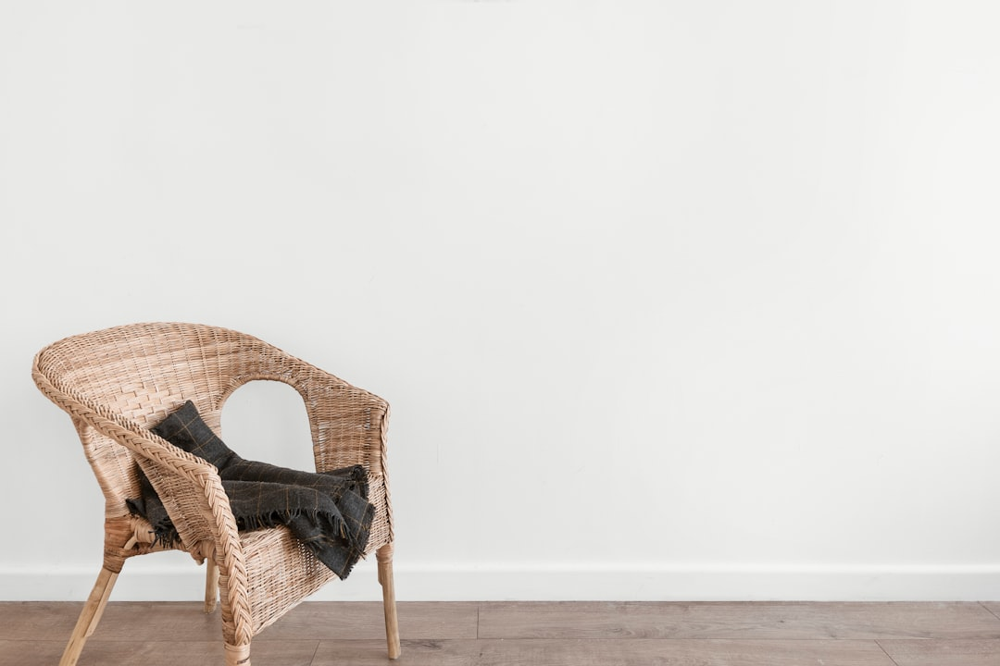
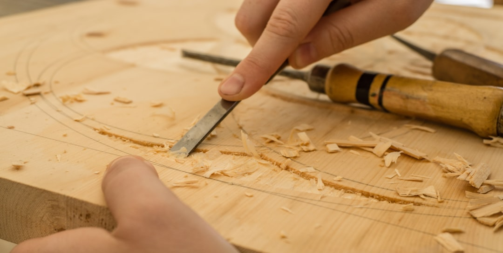

03 — The Collection
Hiroshima
Lounge Armchair · Design — Naoto Fukasawa

손바닥에 닿는 팔걸이의 곡면이, 이 의자의 모든 것을 말합니다.
Hiroshima는 마루니를 세계에 알린 후카사와 나오토의 대표작입니다. 등받이에서 팔걸이로 이어지는 하나의 곡선은 열 개의 부품을 5축 CNC로 정밀하게 깎아낸 뒤, 다시 장인의 손으로 조립하고 마감해 완성됩니다. 최첨단 가공의 정확함과 사람의 손끝이 만나는 지점 — 그 경계에서 Hiroshima 특유의 부드러운 촉감이 태어납니다. 라운지 암체어는 그 곡면을 가장 넉넉하게 품은 형태로, 오래 기대어 앉을수록 몸에 스며듭니다. 도구가 아니라, 곁에 두는 풍경이 됩니다.
Specification
- 디자이너
- Naoto Fukasawa
- 타입
- 라운지 암체어 (Lounge Armchair)
- 프레임
- 오크 · 월넛 · 비치 · 메이플 솔리드 우드
- 가공
- 열 개 부품 · 5축 CNC + 장인 손마감
- 컬렉션
- Hiroshima, since 2008 — Maruni 대표작


Own a Maruni